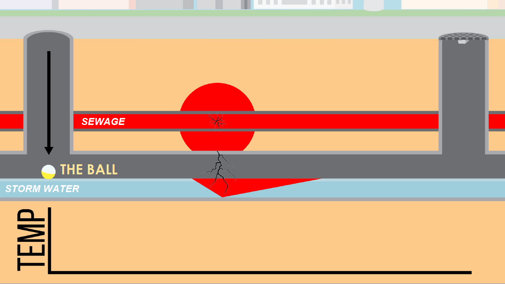
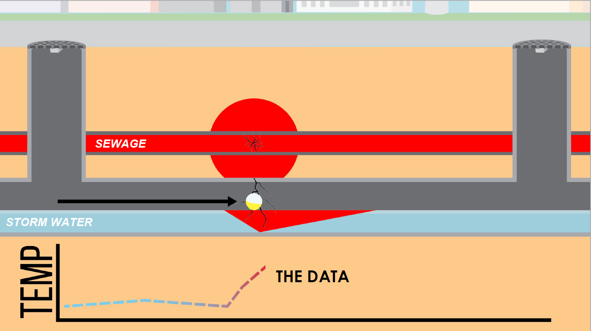
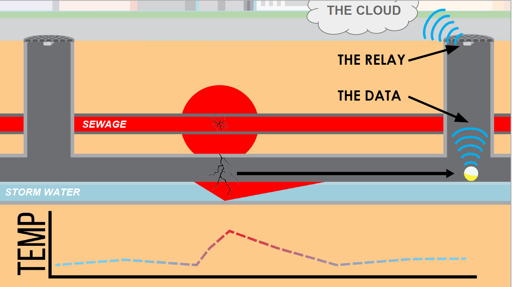

Water Contamination Sensor
Detecting Water Contamination | Product Design
I took a Integrated Product Design course that was a cross-collaboration course with students at Babson College, Olin College of Engineering and Massachussets Arts School of Design to represent the different disciplines of business, engineering and design. We helped build sensors that harnessed the power of IOT and big data to create a ball that can be placed in storm drains and flow through the system in order to track real time data and be able to detect when there is contamination in storm drain water. To learn more about our process and design iterations view our process book
The Problem: The water infrastructure in the United states is aging to the detriment of human health and our environment. When sewage gets of out of sewers, it finds its way into storm water runoff and this water travels directly into public rivers and lakes. This is harmful to the environment, but is also harmful for people. Contact with contaminated water puts people at risk of contracting any of these diseases related to these bacteria and parasites. Aging infrastructure is a massive systemic problem in the United States in the near future, but our team has solved part of it. Specifically, we have focused on preventing harmful contamination from getting from sanitary sewers into the storm drain systems.
Understanding the System: So how does sewer infiltrate into storm drain water? These systems often run parallel to each other and when there are cracks within both both systems, it allows for cross contamination.
Current Solution: The EPA is currently aware of this issue and their solution to this is field kit testing. The problems with these field kits is that they’re inefficient. The city will regularly send trained technicians all over the city to test for contamination indicated by the these triangles. As you can see with the green triangles, most of these test turn up clean for contamination. Once in awhile a test will reveal contamination, indicated by the red triangle, which indicates that there is a sewer main break transferring sewage into the stormwater system. This uninformed guesswork is inefficient.
Our Solution: We created a network of sensors that will flow through storm drain systems to collect water temperature data in real time. We decided to track temperature for our prototype because sewer water tends to be hotter than storm drain water and we only need to detect the change in temperature to notify people of contamination. Below is an illustrated version of what this process would look like
Step 1: A ball is placed into a storm drain system and begins to record temperature data 
{kind=link}
Step 2: When the ball comes across an area of contamination (such as sewage infiltrating into storm drain water) there will be a recorded spike in temperature 
{kind=link}
Step 2: The ball transmit this data it has collected to a smart manhole relay box which communicates this data into the cloud and allows people to access visualize this data 
{kind=link}
{kind=link}
{kind=link}